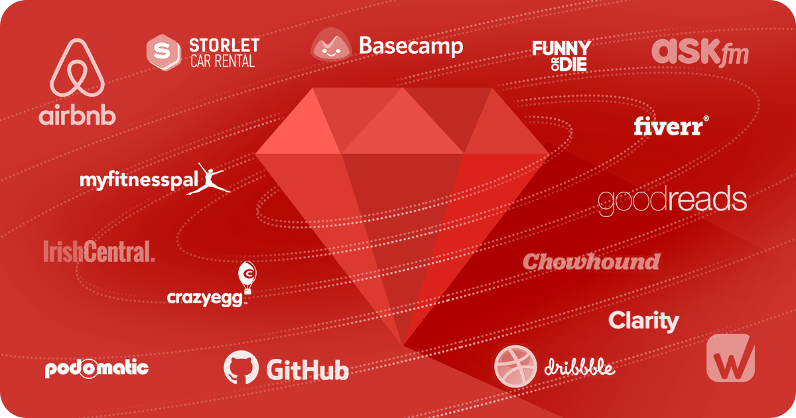

Ruby is an open source, interpreted, object-oriented programming language created by Yukihiro Matsumoto, who chose the gemstone's name to suggest "a jewel of a language." Ruby is designed to be simple, complete, extensible, and portable. Developed mostly on Linux, Ruby works across most platforms, such as most UNIX-based platforms, DOS, Windows, MacIntosh, BeOS and OS/2, for example. According to proponents, Ruby's simple syntax (partially inspired by Ada and Eiffel), makes it readable by anyone who is familiar with any modern programming language.
Ruby is most used for building web applications. However, it is a general-purpose language similar to Python, so it has many other applications like data analysis, prototyping, and proof of concepts. Probably the most obvious implementation of Ruby is Rails web, the development framework built with Ruby.
Ruby is an interpreted, high-level, general-purpose programming language. It was designed and developed in the mid-1990s byYukihiro "Matz" Matsumoto in Japan. Ruby is dynamically typed and uses garbage collection. It supports multiple programming paradigms, including procedural, object-oriented, and functional programming.
